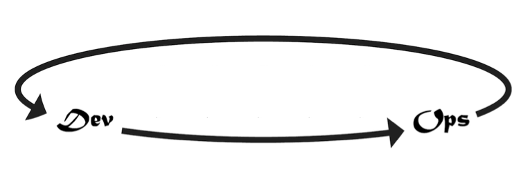
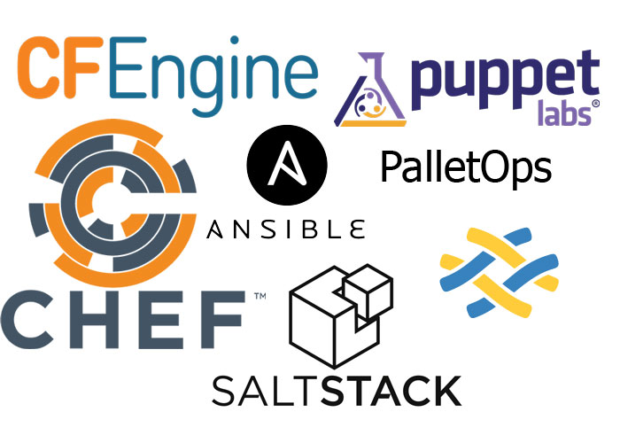

DevOps?
http://www.slideshare.net/madgreek65/no-you-are-not-a-dev-ops-engineer-revisted
DevOps?
https://memegenerator.net/instance/61788966
DevOps?
http://www.slideshare.net/SaltStack/justin-carmony-mentoring-devs-into-dev-ops-saltconf
DevOps?

https://devops.com/devops-dirty-little-secrets/
DevOps
http://www.slideshare.net/KrisBuytaert/looking-back-at-7-years-of-devopsdays/15?src=clipshare
History
2009 "10 deploys per day - dev & ops co-operation and Flickr" - John Allspaw, Paul Hammond
2009 DevOpsDays Ghent - Patrick Debois
2009 DevOpsDays Hamburg
2010 Sydney, Mountain View, Hamburg, Sao Paoulo
2011 Boston, Mountain View, Goteborg
.....
State of Devops
State of Devops 2015 - High performers vs low performers
30x more frequent deployments
60x the change success rate
2x more likely to exceed profitability, market share & productivity goals
State of Devops 2015 - High performers vs low performers
200x faster lead times
168x faster mean time to recover
50% higher market capitalization growth over 3 years
Devops
Faster, Higher Quality, More effective
Faster, Higher Quality, Cheaper
CLAMS
Culture
Lean
Automation
Measurement
Sharing
Culture
Empathy
https://dzone.com/articles/how-express-empathy-%E2%80%93-avoid
Lean

Automation
https://memegenerator.net/instance/37097963
Measurement

http://grafana.org/features/
Sharing
http://langwitches.org/blog/2010/12/07/what-do-you-have-to-lose/
Three ways of Devops
First way: The Principles of Flow
Second way: The Principles of Feedback
Thirdh way: The Principles of Continual Experimentation and Learning
The Principles of Flow
http://itrevolution.com/the-three-ways-principles-underpinning-devops/
The Principles of Feedback

http://itrevolution.com/the-three-ways-principles-underpinning-devops/
The Principles of Continual Experimentation and Learning
http://itrevolution.com/the-three-ways-principles-underpinning-devops/
One way to enable Devops
Organization structure that stays out of the way
Build everything through a Software Defined Lifecycle (SDLC)
Make the work visible
Immutable Infrastructure Delivery
Microservices
Respect for People
Organization structure that stays out of the way
http://www.slideshare.net/botchagalupe/does16-london-better-faster-cheaper-how
Organization structure that stays out of the way
http://www.slideshare.net/botchagalupe/does16-london-better-faster-cheaper-how
Build everything through a Software Defined Lifecycle (SDLC)

http://www.slideshare.net/botchagalupe/does16-london-better-faster-cheaper-how
Make the work visible
http://flylib.com/books/en/4.318.1.31/1/
Make the work visible
http://leansoftwareengineering.com/2009/07/01/a-swimlane-for-ad-hoc-workflow/
Immutable Infrastructure Delivery

Microservices
Small autonomous services that work together - Sam Newman
Loosely coupled service oriented architecture with
bounded contexts
- Adrian Cockroft
http://www.slideshare.net/BruceWong3/the-case-for-chaos
Respect for People
High performers care for their people like strategic assets
It's not just humane, it's a business advantage
Diversity, Empathy
Areas of Worklife: Workload, Control, Reward, Community, Fairness, Values
Not only for Startups

High performing DevOps elephant
Thank you
For more information, see videos from DevOpsDays and Devops Enterprise Summit